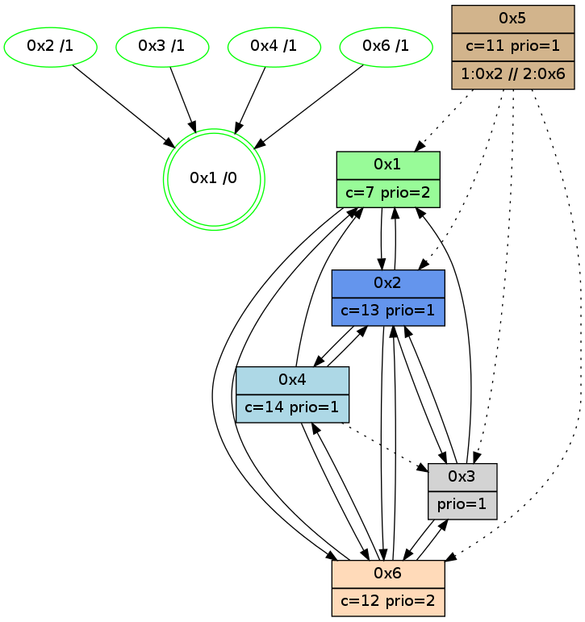

>> << IDX [start] -100 -25 -5 +0 +5 +25 +100 [965.173784971]
 Previous packets
----------------------------------------------------------------------
960.252701 beacon01(adaf) #0 coord=01,02,05,03,04,06 cycle=432.0ms assoc
-- color-indic=1 64 d8 ba
960.262661 beacon02(adaf) #0 coord=01,02,05,03,04,06 cycle=432.0ms assoc 64 89 45
960.272662 beacon05(adaf) #0 coord=01,02,05,03,04,06 cycle=432.0ms assoc 64 2f 6f
960.282662 beacon03(adaf) #0 coord=01,02,05,03,04,06 cycle=432.0ms assoc 64 b3 4b
960.292663 beacon04(adaf) #0 coord=01,02,05,03,04,06 cycle=432.0ms assoc 64 15 61
960.314389 PARSE ERROR************************
Traceback (most recent call last):
File "PacketAnalysis.py", line 167, in showOperaPacket
structPacket = OperaPacketParse.parsePacket(rawPacket)
File "../../pkg-python/HipSens/Core/OperaPacketParse.py", line 461, in parsePacket
return parseHelloMessage(data)
File "../../pkg-python/HipSens/Core/OperaPacketParse.py", line 125, in parseHelloMessage
struct.unpack("!H",linkList[:2])[0])
error: unpack requires a string argument of length 2
48 20 04 00 02 fe 00 02 02 08 02 00 01 00 06 00 03 00 53 04 00 02 00 00 4c 08 05 6c 0c 97 14 2b 02 52 4d 35
960.317471 [Color(1) seq=192 @0:0 color=7 prio=2 >>1.@4 c=1,4,6,8,9,b,c,d;0,2,3,5,a]
960.319053 [Color(2) seq=153 @0:0 color=13 prio=1 >1.@4 >>1.@4 c=7,c;1,4,6,8,9,b]
----------------------------------------------------------------------
960.744810 beacon01(adaf) #0 coord=01,02,05,03,04,06 cycle=432.0ms assoc
-- color-indic=1 64 95 bd
960.754772 beacon02(adaf) #0 coord=01,02,05,03,04,06 cycle=432.0ms assoc 64 c4 42
960.764772 beacon05(adaf) #0 coord=01,02,05,03,04,06 cycle=432.0ms assoc 64 62 68
960.774772 beacon03(adaf) #0 coord=01,02,05,03,04,06 cycle=432.0ms assoc 64 fe 4c
960.784774 beacon04(adaf) #0 coord=01,02,05,03,04,06 cycle=432.0ms assoc 64 58 66
960.794773 beacon06(adaf) #0 coord=01,02,05,03,04,06 cycle=432.0ms assoc 64 2c 7a
960.805651 [Hello(1): seq=666 sym=2,6 sysInfo=hasWarning,coloring-mode-on,ColoringModeRequestCalled stat=2:7,13,0,2/6:4,8,3,1]
960.808056 [Color(4) seq=121 @0:0 color=14 prio=1 c=7,c;1,4,6,8,9,b,d]
960.810191 [Hello(2): seq=1255 sym=3,6,1,4 sysInfo=hasWarning stat=3:12,10,5,1/6:12,3,4,0/1:9,14,6,0/4:0,1,0,0]
960.812970 [Color(6) seq=151 @0:0 color=12 prio=2 >1.@4 >>1.@4 c=7,d;1,4,6,8,9,b]
----------------------------------------------------------------------
961.236918 beacon01(adaf) #0 coord=01,02,05,03,04,06 cycle=432.0ms assoc
-- color-indic=1 64 51 d2
961.246879 beacon02(adaf) #0 coord=01,02,05,03,04,06 cycle=432.0ms assoc 64 00 2d
961.256878 beacon05(adaf) #0 coord=01,02,05,03,04,06 cycle=432.0ms assoc 64 a6 07
961.266879 beacon03(adaf) #0 coord=01,02,05,03,04,06 cycle=432.0ms assoc 64 3a 23
961.276880 beacon04(adaf) #0 coord=01,02,05,03,04,06 cycle=432.0ms assoc 64 9c 09
961.286880 beacon06(adaf) #0 coord=01,02,05,03,04,06 cycle=432.0ms assoc 64 e8 15
961.298614 [Hello(3): seq=765 sym=6,1,2 sysInfo=hasWarning stat=6:8,15,4,3/1:2,0,7,1/2:9,2,6,0]
961.301152 [Color(2) seq=154 @0:0 color=13 prio=1 >1.@4 >>1.@4 c=7,c;1,4,6,8,9,b]
961.304076 [Hello(4): seq=767 sym=2,1,6 asym=3 sysInfo=hasWarning stat=2:13,7,5,0/1:8,10,12,0/6:11,3,4,1/3:2,5,2,0]
961.314218 [STC(1) #0.131 new-neigh,tree-change,inconsistent-stability,stable,to-color d=0]
961.317768 [Color(1) seq=193 @0:0 color=7 prio=2 c=1,4,6,8,9,b,c,d;0,2,3,5,a]
----------------------------------------------------------------------
961.729027 beacon01(adaf) #0 coord=01,02,05,03,04,06 cycle=432.0ms assoc
-- color-indic=1 64 1d 62
961.738989 beacon02(adaf) #0 coord=01,02,05,03,04,06 cycle=432.0ms assoc 64 4c 9d
961.748990 beacon05(adaf) #0 coord=01,02,05,03,04,06 cycle=432.0ms assoc 64 ea b7
961.758988 beacon03(adaf) #0 coord=01,02,05,03,04,06 cycle=432.0ms assoc 64 76 93
961.768989 beacon04(adaf) #0 coord=01,02,05,03,04,06 cycle=432.0ms assoc 64 d0 b9
961.778989 beacon06(adaf) #0 coord=01,02,05,03,04,06 cycle=432.0ms assoc 64 a4 a5
961.790158 [Hello(1): seq=667 sym=2,6 sysInfo=hasWarning,coloring-mode-on,ColoringModeRequestCalled stat=2:8,13,0,2/6:5,9,3,1]
961.792548 [STC(4)->1 #0.131 new-neigh,tree-change,inconsistent-stability,stable,to-color d=1]
961.794655 [Hello(2): seq=1256 sym=3,6,1,4 sysInfo=hasWarning stat=3:13,10,5,1/6:12,4,4,0/1:9,15,7,0/4:1,1,0,0]
961.796879 [Color(4) seq=122 @0:0 color=14 prio=1 c=7,c;1,4,6,8,9,b,d]
961.798419 [STC(2)->1 #0.131 new-neigh,tree-change,inconsistent-stability,stable,to-color d=1]
961.801099 [STC(6)->1 #0.131 new-neigh,tree-change,inconsistent-stability,stable,to-color d=1]
961.803382 [Color(6) seq=152 @0:0 color=12 prio=2 c=7,d;1,4,6,8,9,b]
----------------------------------------------------------------------
962.221135 beacon01(adaf) #0 coord=01,02,05,03,04,06 cycle=432.0ms assoc
-- color-indic=1 64 d9 0d
962.231097 beacon02(adaf) #0 coord=01,02,05,03,04,06 cycle=432.0ms assoc 64 88 f2
962.241098 beacon05(adaf) #0 coord=01,02,05,03,04,06 cycle=432.0ms assoc 64 2e d8
962.251097 beacon03(adaf) #0 coord=01,02,05,03,04,06 cycle=432.0ms assoc 64 b2 fc
962.261097 beacon04(adaf) #0 coord=01,02,05,03,04,06 cycle=432.0ms assoc 64 14 d6
962.271097 beacon06(adaf) #0 coord=01,02,05,03,04,06 cycle=432.0ms assoc 64 60 ca
962.282864 [Hello(4): seq=768 sym=2,1,6 asym=3 sysInfo=hasWarning stat=2:13,7,6,0/1:9,11,13,0/6:11,4,5,1/3:2,5,2,0]
962.287446 [Color(2) seq=155 @0:0 color=13 prio=1 c=7,c;1,4,6,8,9,b]
962.296419 [Color(1) seq=194 @0:0 color=7 prio=2 c=1,4,6,8,9,b,c,d;0,2,3,5,a]
----------------------------------------------------------------------
962.713242 beacon01(adaf) #0 coord=01,02,05,03,04,06 cycle=432.0ms assoc
-- color-indic=1 64 01 49
962.723204 beacon02(adaf) #0 coord=01,02,05,03,04,06 cycle=432.0ms assoc 64 50 b6
962.733204 beacon05(adaf) #0 coord=01,02,05,03,04,06 cycle=432.0ms assoc 64 f6 9c
962.743205 beacon03(adaf) #0 coord=01,02,05,03,04,06 cycle=432.0ms assoc 64 6a b8
962.753206 beacon04(adaf) #0 coord=01,02,05,03,04,06 cycle=432.0ms assoc 64 cc 92
962.763204 beacon06(adaf) #0 coord=01,02,05,03,04,06 cycle=432.0ms assoc 64 b8 8e
962.774962 [Hello(2): seq=1257 sym=3,6,1,4 sysInfo=hasWarning stat=3:13,10,5,1/6:12,5,5,0/1:9,0,7,0/4:1,1,0,0]
962.777641 [Hello(6): seq=681 sym=4,2,1,3 sysInfo=hasWarning stat=4:4,9,1,0/2:7,1,12,1/1:12,15,13,1/3:13,3,3,4]
962.779540 [Color(3) seq=125 @0:0 prio=1 c=7,c,d;1,4,6,8,9,b]
962.781038 [Color(4) seq=123 @0:0 color=14 prio=1 c=7,c;1,4,6,8,9,b,d]
962.782531 [Color(6) seq=153 @0:0 color=12 prio=2 c=7,d;1,4,6,8,9,b]
----------------------------------------------------------------------
963.205351 beacon01(adaf) #0 coord=01,02,05,03,04,06 cycle=432.0ms assoc
-- color-indic=1 64 c5 26
963.215313 beacon02(adaf) #0 coord=01,02,05,03,04,06 cycle=432.0ms assoc 64 94 d9
963.225312 beacon05(adaf) #0 coord=01,02,05,03,04,06 cycle=432.0ms assoc 64 32 f3
963.235312 beacon03(adaf) #0 coord=01,02,05,03,04,06 cycle=432.0ms assoc 64 ae d7
963.245313 beacon04(adaf) #0 coord=01,02,05,03,04,06 cycle=432.0ms assoc 64 08 fd
963.255314 beacon06(adaf) #0 coord=01,02,05,03,04,06 cycle=432.0ms assoc 64 7c e1
963.267078 [Hello(4): seq=769 sym=2,1,6 asym=3 sysInfo=hasWarning stat=2:13,7,6,0/1:9,12,13,0/6:11,5,5,1/3:2,5,2,0]
963.269745 [Color(2) seq=156 @0:0 color=13 prio=1 c=7,c,e;1,4,6,8,9,b]
963.271020 [Color(5) seq=102 @0:0 color=11 prio=1 >1.@2 >>2.@6,1.@3,1.@4 c=8;4,7,9]
963.278746 [Color(1) seq=195 @0:0 color=7 prio=2 c=1,4,6,8,9,b,c,d;0,2,3,5,a]
----------------------------------------------------------------------
963.697458 beacon01(adaf) #0 coord=01,02,05,03,04,06 cycle=432.0ms assoc
-- color-indic=1 64 89 96
963.707419 beacon02(adaf) #0 coord=01,02,05,03,04,06 cycle=432.0ms assoc 64 d8 69
963.717419 beacon05(adaf) #0 coord=01,02,05,03,04,06 cycle=432.0ms assoc 64 7e 43
963.727420 beacon03(adaf) #0 coord=01,02,05,03,04,06 cycle=432.0ms assoc 64 e2 67
963.737419 beacon04(adaf) #0 coord=01,02,05,03,04,06 cycle=432.0ms assoc 64 44 4d
963.747421 beacon06(adaf) #0 coord=01,02,05,03,04,06 cycle=432.0ms assoc 64 30 51
963.758555 [Hello(1): seq=669 sym=2,6 sysInfo=hasWarning,coloring-mode-on,ColoringModeRequestCalled stat=2:9,13,1,2/6:7,11,4,1]
963.760946 [Color(4) seq=124 @0:0 color=14 prio=1 c=7,c;1,4,6,8,9,b,d]
963.762841 [Hello(2): seq=1258 sym=3,6,1,4 sysInfo=hasWarning stat=3:14,11,5,1/6:13,6,5,0/1:9,1,7,0/4:1,2,0,0]
963.765229 [STC(1) #0.132 new-neigh,tree-change,inconsistent-stability,stable,to-color d=0]
963.769498 [Color(6) seq=154 @0:0 color=12 prio=2 c=7,d;1,4,6,8,9,b,e]
----------------------------------------------------------------------
964.189567 beacon01(adaf) #0 coord=01,02,05,03,04,06 cycle=432.0ms assoc
-- color-indic=1 64 4d f9
964.199528 beacon02(adaf) #0 coord=01,02,05,03,04,06 cycle=432.0ms assoc 64 1c 06
964.209528 beacon05(adaf) #0 coord=01,02,05,03,04,06 cycle=432.0ms assoc 64 ba 2c
964.219528 beacon03(adaf) #0 coord=01,02,05,03,04,06 cycle=432.0ms assoc 64 26 08
964.229528 beacon04(adaf) #0 coord=01,02,05,03,04,06 cycle=432.0ms assoc 64 80 22
964.239528 beacon06(adaf) #0 coord=01,02,05,03,04,06 cycle=432.0ms assoc 64 f4 3e
964.251562 [Hello(4): seq=770 sym=2,1,6 asym=3 sysInfo=hasWarning stat=2:14,8,6,0/1:10,13,14,0/6:11,6,5,1/3:2,5,2,0]
964.254191 [STC(2)->1 #0.132 new-neigh,tree-change,inconsistent-stability,stable,to-color d=1]
964.256392 [STC(3)->1 #0.132 new-neigh,tree-change,inconsistent-stability,stable,to-color d=1]
964.258530 [Color(2) seq=157 @0:0 color=13 prio=1 c=7,c,e;1,4,6,8,9,b]
964.260172 [STC(4)->1 #0.132 new-neigh,tree-change,inconsistent-stability,stable,to-color d=1]
964.265002 [Color(1) seq=196 @0:0 color=7 prio=2 c=1,4,6,8,9,b,c,d;0,2,3,5,a]
----------------------------------------------------------------------
964.681675 beacon01(adaf) #0 coord=01,02,05,03,04,06 cycle=432.0ms assoc
-- color-indic=1 64 00 fe
964.691636 beacon02(adaf) #0 coord=01,02,05,03,04,06 cycle=432.0ms assoc 64 51 01
964.701637 beacon05(adaf) #0 coord=01,02,05,03,04,06 cycle=432.0ms assoc 64 f7 2b
964.711638 beacon03(adaf) #0 coord=01,02,05,03,04,06 cycle=432.0ms assoc 64 6b 0f
964.721638 beacon04(adaf) #0 coord=01,02,05,03,04,06 cycle=432.0ms assoc 64 cd 25
964.731637 beacon06(adaf) #0 coord=01,02,05,03,04,06 cycle=432.0ms assoc 64 b9 39
964.743363 [Hello(2): seq=1259 sym=3,6,1,4 sysInfo=hasWarning stat=3:15,11,5,1/6:13,7,5,0/1:9,2,8,0/4:1,2,1,0]
964.746045 [Color(3) seq=127 @0:0 prio=1 c=7,c,d,e;1,4,6,8,9,b]
964.749189 [Color(6) seq=155 @0:0 color=12 prio=2 c=7,d;1,4,6,8,9,b,e]
964.753099 [Color(4) seq=125 @0:0 color=14 prio=1 c=7,c;1,4,6,8,9,b,d]
964.758560 [Hello(1): seq=670 sym=2,6 sysInfo=hasWarning,coloring-mode-on,ColoringModeRequestCalled stat=2:9,13,1,2/6:7,12,4,1]